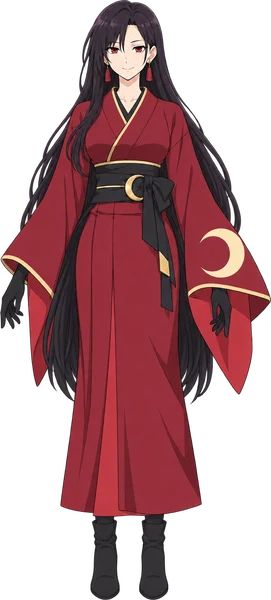

How Velora went from character art to a real fight
Velora started as a registered creator fighter and became part of the ODDBOUT roster. The images below show her original design and the animation frames used in the game.
Original character art

Start with a full-body reference. Use it to keep the silhouette, clothes and proportions consistent when drawing the side view and the motions.
Idle, walk and combo sprite sheets
Arrange the side-view animation frames in a grid of equal cells, with a separate sheet for each motion. Open an image to inspect its frames.


Velora’s combo needed an alignment fix. Its opening stance used a different origin from her idle stance, so the body could shift as the move began. The game adjusted the combo’s origin so she starts the attack from the same place.
Watch Velora fight Leon
In this ODDBOUT exhibition, Leon wins by KO at 34.3 seconds. Watch how Velora moves between her stance, movement and attacks in the actual game.
Replay the full match in ODDBOUT →
Create with control
AI Fighter Creator is a local plugin maintained by Lucas Foundation for creating fighters for ODDBOUT. Describe a character, provide reference images, or use both. The workflow preserves versions and your choices while you review appearance, movement, attacks, defense and the final package.
This is an independently developed plugin. Public directory approval is pending. Publication of these pages does not imply OpenAI approval or endorsement.
What you need
- Windows x64, Node.js 22.12 or later, and a compatible Codex local executor.
- Python 3.11 or later and the bundled sprite-gen setup for generation.
- Your own supported image and video provider accounts. Availability, subscriptions and usage charges are separate.
- ODDBOUT sign-in when you choose to register a completed fighter. Local inspection and project management do not require ODDBOUT sign-in.
From idea to playable package
- Describe and prepare. Confirm reference roles and current provider access.
- Review together. Inspect actual previews at each agreed group boundary. Revising one motion preserves other selected versions.
- Validate. Check the complete package, actual animation, identity, gait and ground contact. A format check alone is not visual approval.
- Register when requested. Upload the approved immutable package. Successful server validation registers the fighter in production, where only you play it.
- Enter. Check each required motion on the fighter page, then enter it so other people meet it in cups and ranked duels, subject to later moderation.
Understand where your data goes
Privacy
Local files, tool responses, generation providers and public registration.
Read the privacy notice →Support and source
Questions, privacy requests and abuse reports: turbo08@gmail.com. The source is available under MIT; bundled components retain their own licenses, including sprite-gen-agent (a fork of Alex Kim's sprite-gen) under Apache-2.0.